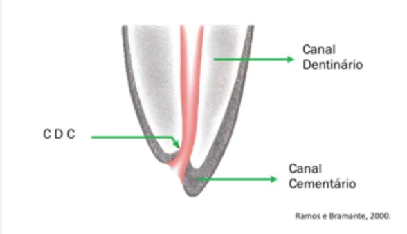

O que é Endodontia?
Endodontia é a área responsável por estudar, prevenir e tratar alterações da polpa dental.
Pode haver tecido pulpar vivo ou necrosado, além de várias complexidades anatômicas.
Estrutura do Dente
O dente é dividido em coroa e raiz.
- Cavidade pulpar
- Câmara pulpar
- Canal radicular
Câmara Pulpar

A quantidade de paredes depende do número de canais do dente.
- 1 canal → 5 paredes
- Mais de 1 canal → possui assoalho
Dentes anteriores → teto = incisal
Dentes posteriores → teto = oclusal
CDC (Constrição Dentinocementária)

Região onde o canal dentinário encontra o cementário.
É o limite ideal do tratamento endodôntico.
Sistema de Canais Radiculares

O canal radicular não é único, sendo dividido em:
- Canal dentinário
- Canal cementário
Ambos formam um cone ao se unirem.
Anatomia Apical

Região final do canal radicular.
O forame apical é a saída do canal, próximo da CDC.
Curiosidade
O rostrum canalis é uma linha escura encontrada no assoalho da câmara pulpar em dentes com várias raízes.